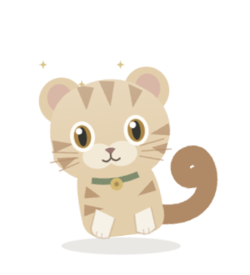
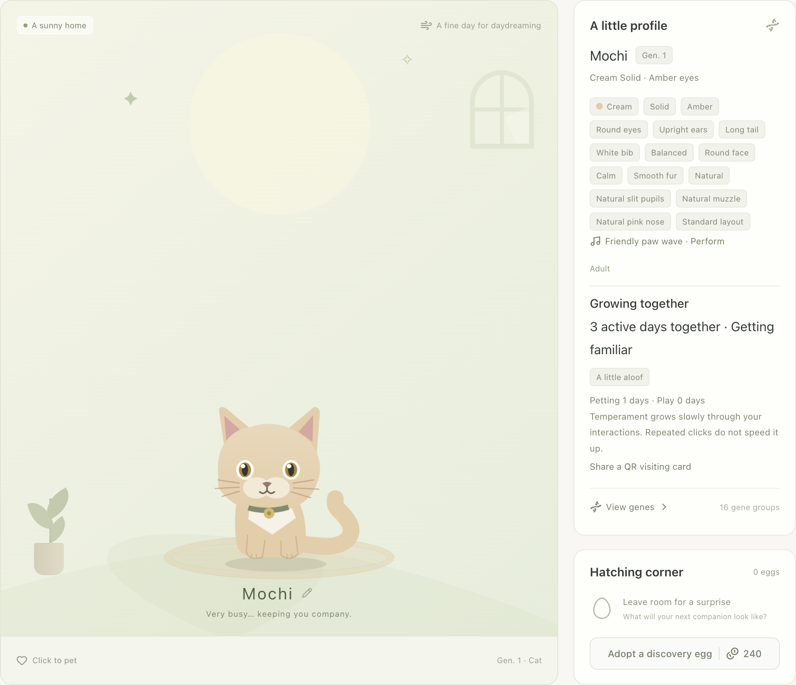
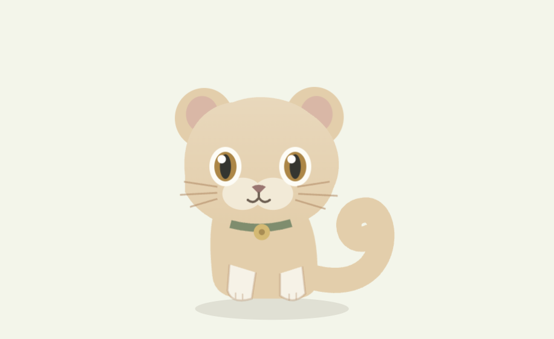
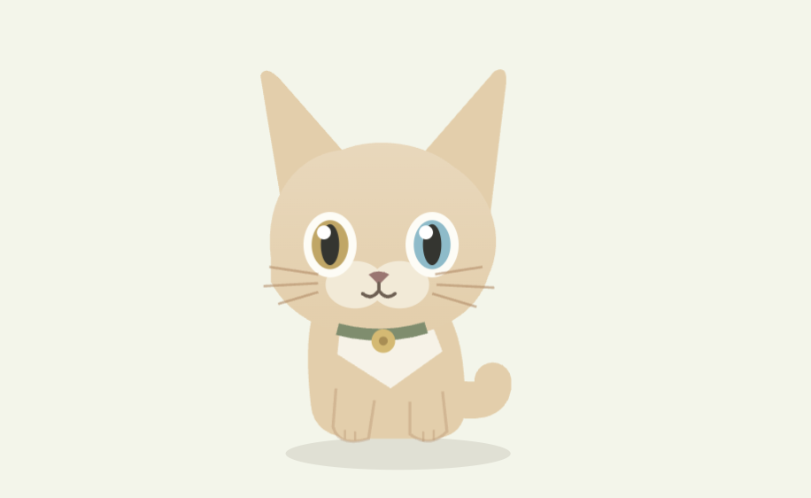

Catch the moments that need you
An amber bell stays when a supported local request needs approval or an answer. Click it to return to that chat.
Meet the cat that grows alongside your Codex work. Keep your usage close, catch the moments that need you, and return to the right chat with a click.

A cat with a look of its own.A few quiet ways to help you pick up where you left off.
An amber bell stays when a supported local request needs approval or an answer. Click it to return to that chat.
Hover over the cat to reveal its shortcuts. Return to your active or pinned Codex conversation, or choose a recent chat by its real title.
Leave a short bookmark beside a chat. When you return, your note appears beside the cat, ready for you to pick up the work.
A little wandering, a toy ball, a glance at the cursor. Quiet greetings respect nighttime, work and your Do Not Disturb choice.
Local token usage can earn capped pet-coin rewards. Hatch cats, discover inherited traits and train their little tricks.
Play a quick game, build practice and bond, and unlock toys, keepsakes and decorations for your cat’s room.
A reply finishes. A question needs your answer. A permission request waits. Pawprint gives each moment its own signal, so you know where to return.
Approval hook setup is currently available on macOS. Local question reminders use supported structured records.
Adopt an egg, meet your cat and get to know its temperament. It blinks, plays, grows and settles into your working day.

Coat, eyes, ears and tail come from inherited genes. Browse the trait catalog, learn the odds and find a favorite combination over time.


Keep token counts, model-aware cost estimates and recent quota snapshots close at hand. Explore daily and per-model details when you want a closer look.
Estimated costs are API equivalents, not your subscription bill. Quota comes from local snapshots, not a live account lookup.
Share a QR visiting card with a friend, or connect nearby homes on your local network for visits and breeding. Both people choose to connect; conversations and usage records stay on their own computers.
Start with an egg and a few simple shortcuts. New installs open in English with local work helpers enabled; existing preferences stay yours.
This beta is unsigned on Windows and ad-hoc signed on Mac. Verify the SHA-256 file from the release page. On Mac, move Pawprint to Applications; if macOS cannot verify the developer, choose Done and use System Settings → Privacy & Security → Open Anyway. If it says damaged, stop and report the build.
Mac signing and installation guide ↗The pet, work shortcuts, reminders, bookmarks and games run locally without making extra model requests. Your normal Codex usage follows your own plan.
Pawprint supports Windows 10/11 x64 and Apple silicon Macs. Chat return needs a compatible Codex desktop client. Native approval hook setup is currently macOS-only; local usage and supported question records also work on Windows.
New installs enable quiet local reminders and prepare Pawprint’s hooks when Codex data is found. Review and trust the labeled Pawprint rows in your client for approval alerts. You choose whether to add sounds or system notifications.
Pets, bookmarks, rooms and usage data stay in your local profile. Pricing and update checks use their existing online catalogs. Nearby visits are optional and use your local network.